40 سؤال
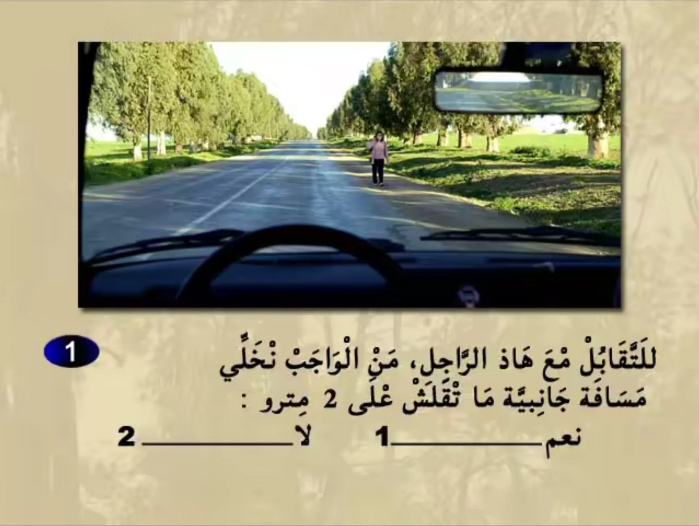
الجواب الصحيح: 1
عندما نتقابل مع شخص أو حيوان خارج التّجمعات الحضرية، يجب علينا ترك مسافة جانبية لا تقل عن 2 متر. إذن في هذه الحالة لا يجب علينا ترك مسافة جانبية أقل من 2 متر عن الرّاجل الذي أمامنا.
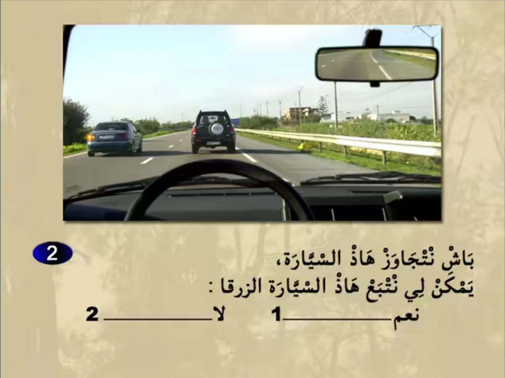
الجواب الصحيح: 1
نتواجد في طريق ذات إتّجاه واحد (لا توجد سيارات قادمة في الإتّجاه المعاكس) وهذا واضح من خلال الخط المتّصل الموجود أقصى اليسار. إذن عندما نكون متواجدين في طريق ذات إتّجاه واحد فيمكننا أن نتبع سيارة تقوم بعملية التّجاوز بما أنه لا توجد سيارة قادمة من الخلف تقوم بعملية التّجاوز أيظا.
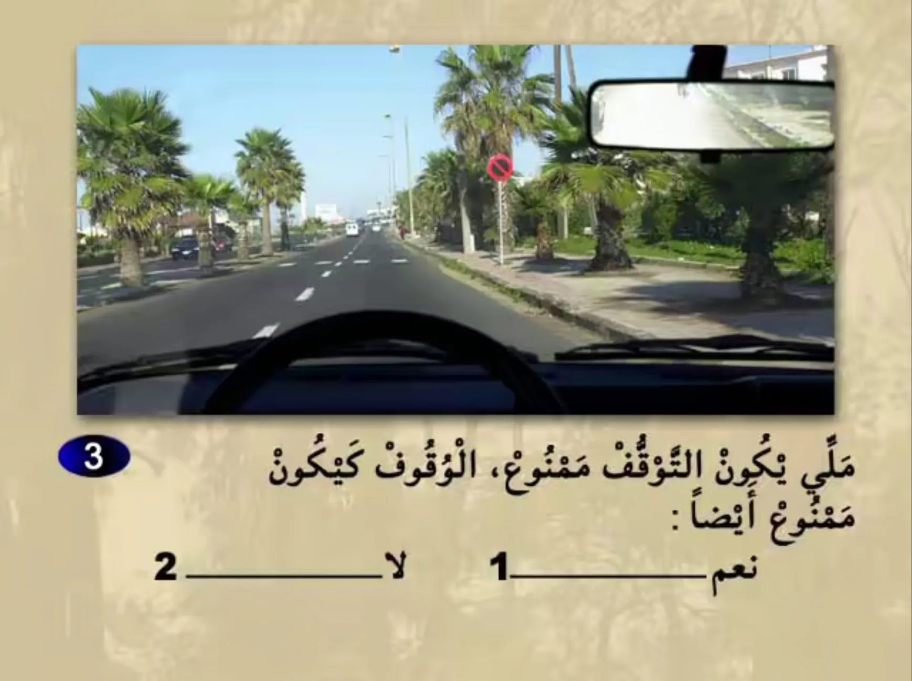
الجواب الصحيح: 2
تذكير: بالنسبة للنّوقف فهو يعني أن نوقف السيّارة ونتركها ونذهب. أمّا بالنسبة للوقوف فهو يعني مثلا أن نقوم بإنزال راكب معنا أو تفريغ حمولة ونكمل السير. في هذه الحالة فالعلامة الطّرقية تعني ممنوع التوقّف، يعني ممنوع أن نترك السيارة ونذهب في هدا المكان، أما بالنسبة للوقوف لكي ننزل راكب أو أي شيئ بدون ترك السيّارة فهو مسموح به. إذن عندما يكون التوقّف ممنوع فالوقوف لا يكون ممنوع أيظا.
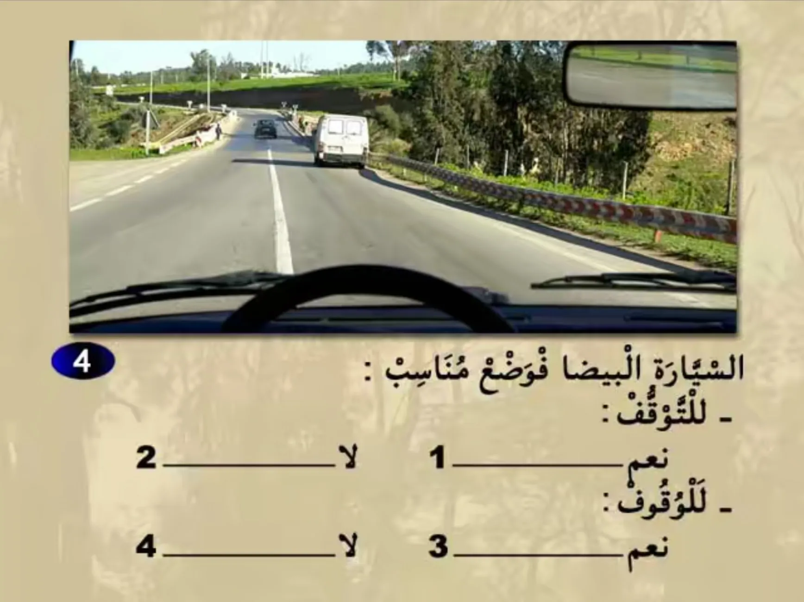
الجواب الصحيح: 2 و 4
عندما يكون الحاجز على اليمين باللون الأبيض والأحمر فهو يشير إلى أنه ممنوع التوقّف، لكن بالنسبة للوقوف فهو مسموح به. لكن في هذه الحالة فالسيارة البيضاء ممنوع عليها الوقوف أيظا لأنها تعرقل حركة السّير، أولا لأن وقوفها فهو بالقرب من قنطرة وهذا يعرقل حركة السّير، وأيظا وقوف السيّارة البيضاء في هذا المكان سوف يجبر العربات القادمة من الخلف لإرتكاب مخالفة وهي تجاوز الخط المتّصل. إذن السيّارة البيضاء فهي في وضع غير مناسب للتوقّف والوقوف.
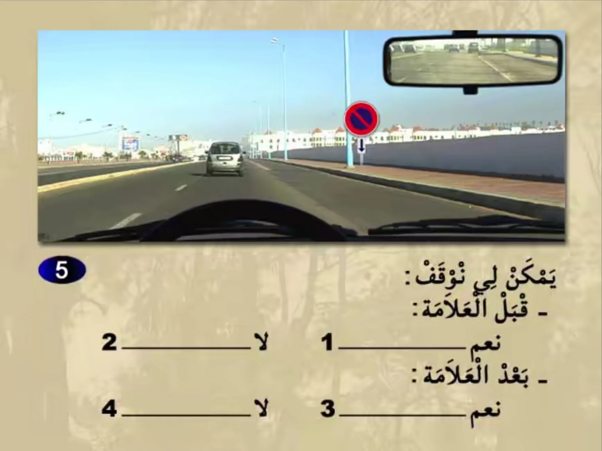
الجواب الصحيح: 1 و 3
العلامة الطّرقية تعني ممنوع التوقّف، ولا تمنع الوقوف، إذن في هذه الحالة يمكنني الوقوف قبل العلامة وبعد العلامة الطّرقية.
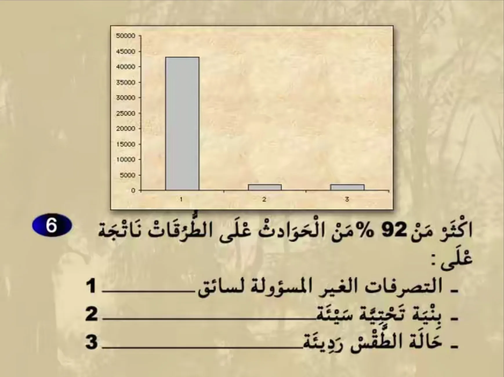
الجواب الصحيح: 1
بالنسبة للمعلومات المتوفّرة في المبيان الظّاهر على الصورة، فهو يشير على أن الرقم 2 و 3 نسبتهم قليلة في الحوادث الطّرقية، لكن بالنسبة للرّقم 1 فهو يشير على أنه التصرفات الغير المسؤولة للسائق فهي السبب الرئيسي لعدد الحوادث الطّرقية.
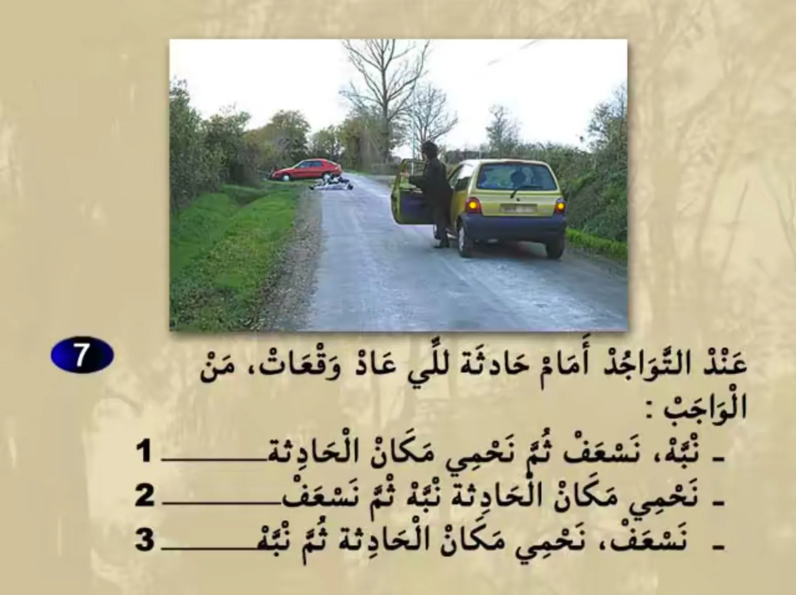
الجواب الصحيح: 2
عندما نتواجد أما حادثة، فأول شيئ نقوم به فهو حماية مكان الحادث و بعد ذلك نقوم بالتنبيه للحادث (نضع مثلث تنبيه بالخطر على مسافة كافية) وأخيرا نسعف.
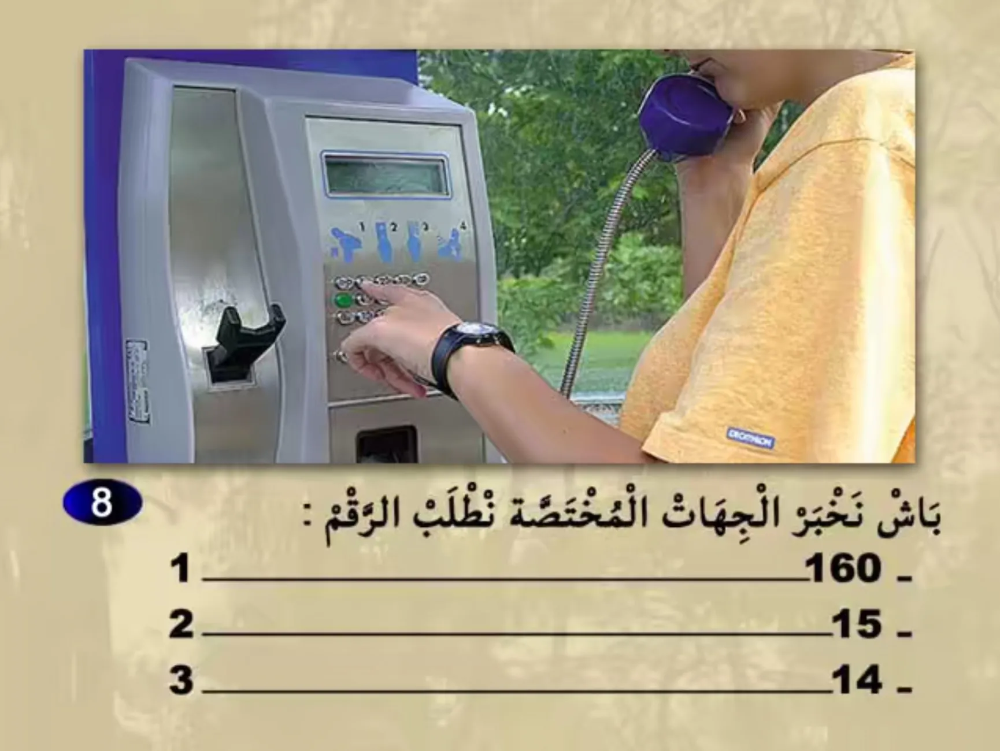
الجواب الصحيح: 2
للإتصال بالجهات المختصة والسلطات فالرقم هو 15 أو 150 (أيظا الرقم 19 وهو خاص بالشرطة).
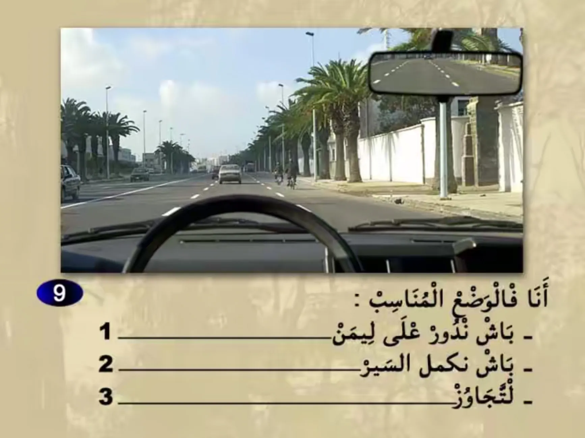
الجواب الصحيح: 3
بالنسبة للطريق فهي تحتوي على 3 مسارات، أقصى اليمين والوسط (الذي أتواجد فيه حاليا) والممر الموجود على اليسار. بالنسبة للمسار المتواجد أقصى اليمين فهو مسار يمكنني إستعماله للإنعطاف على اليمين أو إكمال السير مباشرة، لكن هذا المسلك الذي أتواجد فيه حاليا فهو مسلك خاص بالتجاوز. لذلك أنا الان في وضع مناسب للتجاوز.
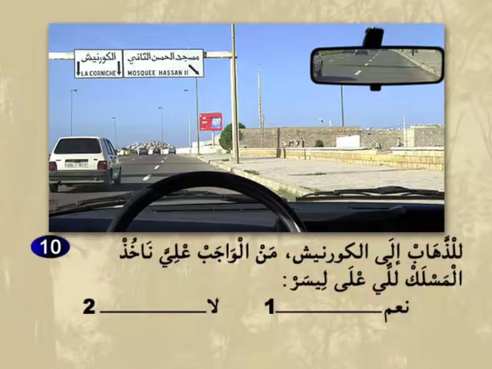
الجواب الصحيح: 1
لدينا علامات إرشادية، بالنسبة للمسلك الذي نتواجد فيه فالعلامة الإرشادية تعلمنا على أنه يؤدي إلى مسجد الحسن الثاني إذا إستمرينا في السير فيه، لذلك إذا كنا نريد الذهاب إلى الكورنيش فمن الواجب علينا أن نسير في المسلك المتواجد على اليسار لأنه هو الذي يؤدي إلى الكورنيش وليس هذا المسلك الذي نتواجد فيه الان.
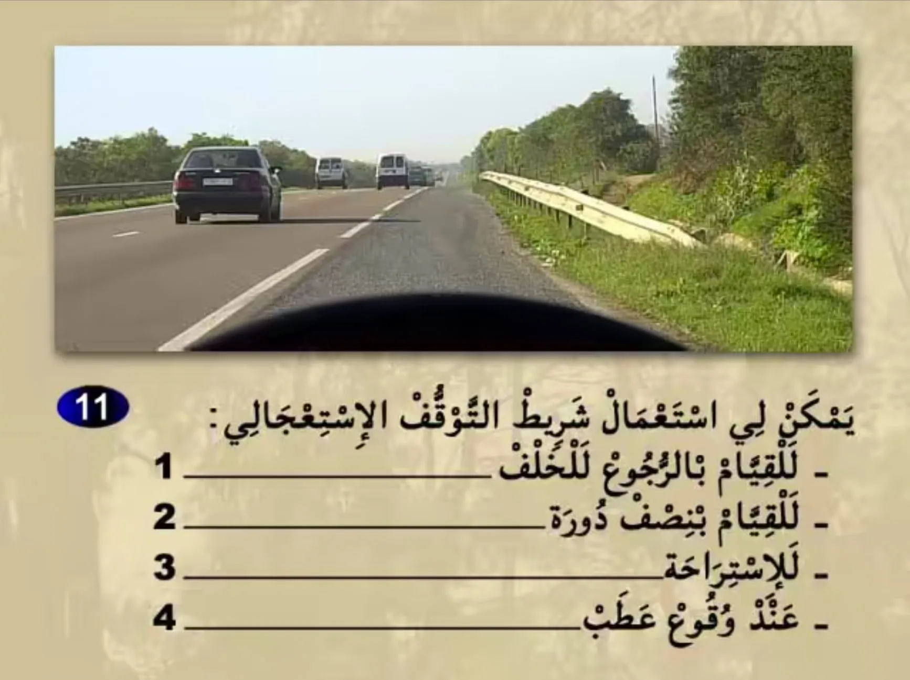
الجواب الصحيح: 4
بالنسبة لشريط التوقّف الإستعجالي فهو مخصص فقط إذا كان هنالك عطب. لا يمكننا الإستراحة فيه وهذا يعني أنه إرتكبنا مخالفة. وفي الطّريق السيّار فممنوع علينا الرجوع للخلف أو نصف دورة.
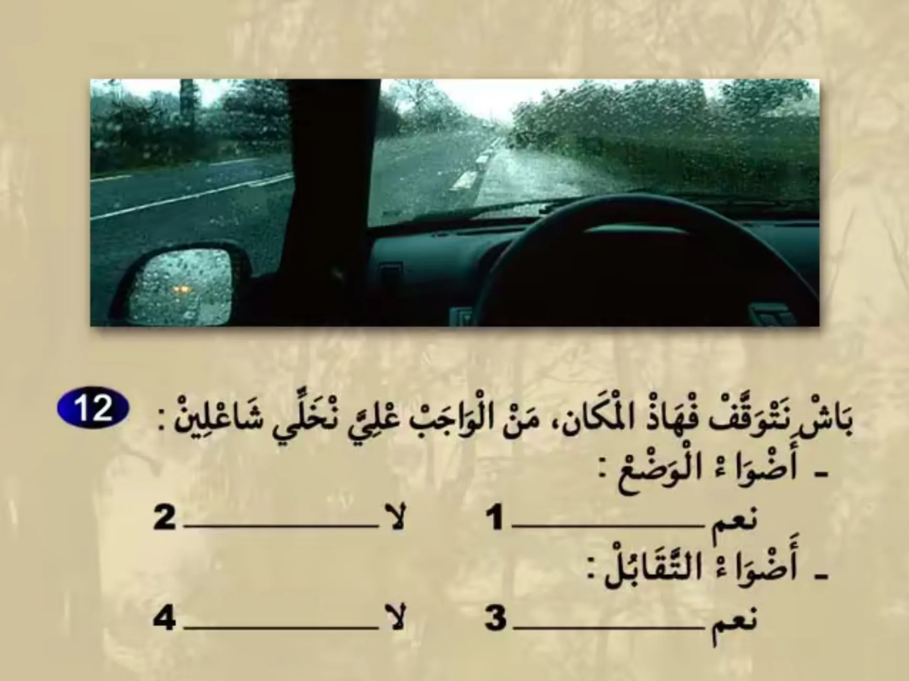
الجواب الصحيح: 1 و 4
كما تظهر الصورة فالجو ممطر، في حالة كان الجو ممطر فالرؤية تكون صعبة قليلا والعربات لا تظهر جيدا على الطّريق في حالة توقّفها خصوصا أن الأضواء تكون غير مشغّلة، لذلك لكي تظهر العربة بشكل جيّد وهي متوقّفة في هذا الجو الممطر فيجب علينا أن نقوم بتشغيل أضواء الوضع. وليس أضواء التّقابل. (أضواء الوضع فهي كافية في مثل هذه الحالات لأنه لا تستهلك الكثير من بطارية السيارة وتظهر عرض السيارة بالنسبة للعربات الأخرى. لو قمنا بتشغيل أضواء التّقابل فسوف تستنزف بطارية السيارة، وبالتالي لا يمكننا إقلاع السيارة بعد ذلك لأن البطارية سوف تكون مستنزفة من طرف أضواء التّقابل.
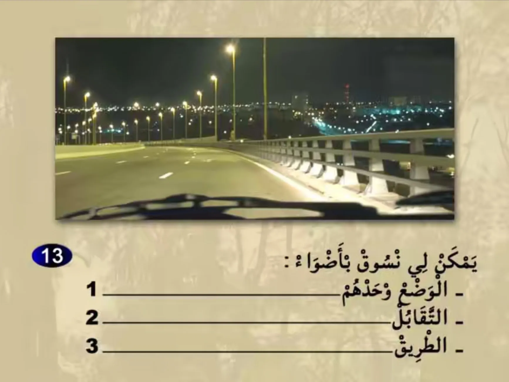
الجواب الصحيح: 1 و 2
عندما نتواجد داخل المجال الحضري، وعند وجود الإنارة العمومية، فيمكنني السير بأضواء الوضع ويمكننا كذلك السير بأضواء التّقابل.
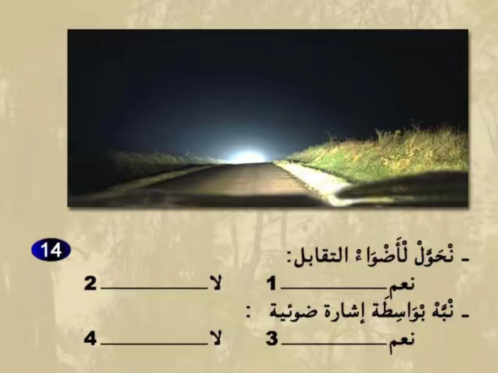
الجواب الصحيح: 1 و 3
نتواجد خارج التجمّع الحضري، للإضاءة على مسافة بعيدة (100 متر) نستعمل أضواء الطّريق، بالنسبة لأضواء التّقابل فهي تضيئ على مسافة 30 متر. بالنسبة لهذه الحالة فنحن نسير بأضواء الطّريق وتوجد عربة قادمة في الإتجاه المعاكس لذلك يحب عليّ التغيير إلى أضواء التقابل لكي لا ينبهر سائق العربة المقابلة بأضواء الطّريقة. بالنسبة للتنبيه بإشارة ضوئية فيمكننا ذلك لكي يعلم سائق العربة القادمة على أنني قادم في الإتجاه المعاكس وينتبه أكثر.
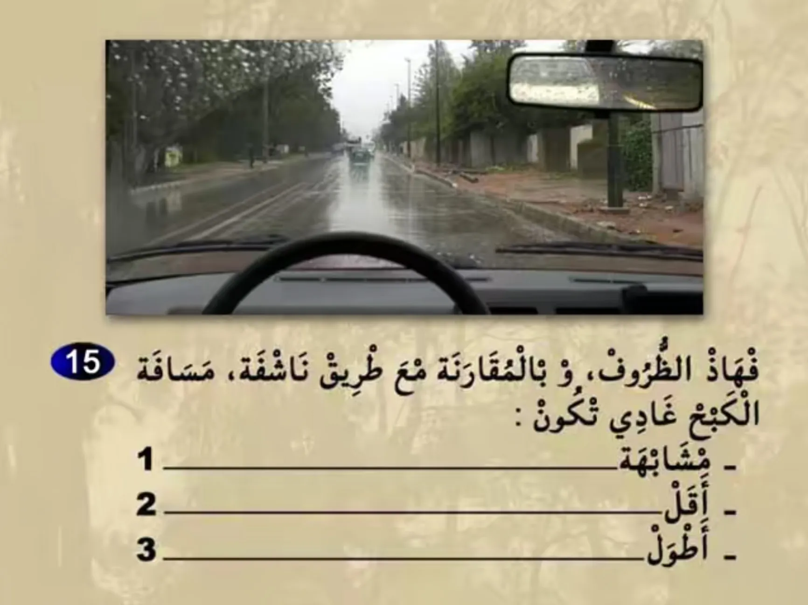
الجواب الصحيح: 3
بالنسبة للظروف الموجودة فكما تبيّن الصورة فالجو ممطر والأرض مبللة. بالمقارنة مع طريق ناشفة ففي هذه الحالة وفي طريق مبللة فإن مسافة الكبح سوف تكون أطول لذلك في الأجواء الممطرة دائما يوصى بترك مسافة أمان أطول، لأنه عند الكبح في طريق مبللة فالعربة لا تقف في مكانها في الحال فهي تحتاج مسافة أطول قليلا للوقوف على عكس الكبح في طريق عادية وناشفة.
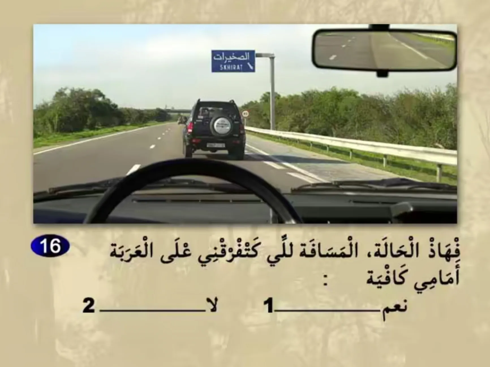
الجواب الصحيح: 2
الصورة تظهر على أن المسافة التي تفصل بيني وبين العربة التي أمامي قصيرة وعلى أنني قريب جدا من العربة، لذلك المسافة التي تفصلني عن العربة التي أمامي غير كافية.
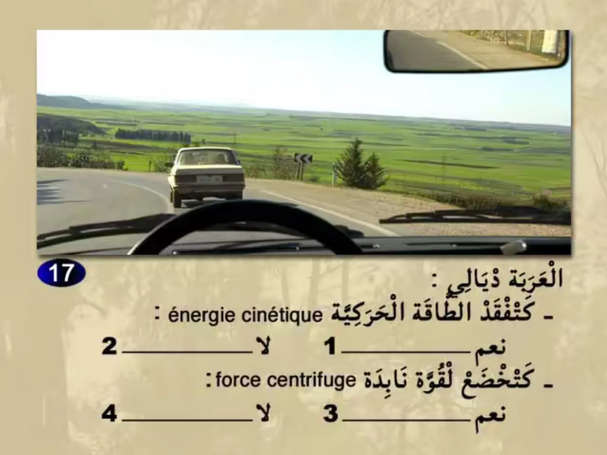
الجواب الصحيح: 2 و 3
أولا نشرح الطّاقة الحركية: فهي نوع من الطاقة التي تملكها العربة بسبب حركتها، إذن بما أننا نسير على الطّريق فإن العربة لا تفقد طاقتها الحركية. بالنسبة للقوة النابذة فهي تعني كاتجذبني لخاارج المنعرج. يعني كاتجررني او كاترميني لخارج المنعرج .مثلا انا غادي ندور في منعرج على اليسار، كيخصني ننقص من السرعة قبل المنعرج ونزيد فالسرعة مني ندخل للمنعرج، باش يكون توازن بين سيارتي والمنعرج .لان هناك قوة كاتجذبني لليمين .مثلا انا جاي بسرعة مع جاي مع درت في منعرج على اليسار مانقصت لا من سرعة لا باش جاي باش داير ،فهاذ الحالة السيارة كاتزلق وكتولي زالقا لليمين يعني القوة النابذة اللي كاتجذبني لخارج المنعرج. إذن العربة تخضع لقوة نابدة.
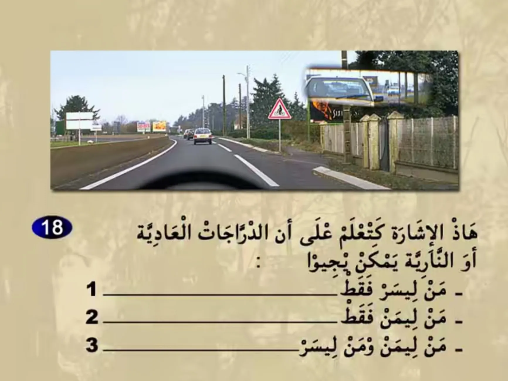
الجواب الصحيح: 3
الإشارة الطّرقية تعني إنتباه خطر الدراجات العادية أو النارية، عند وجود خطر فهو يمكن أن يحدث من الجهتين، اليسرى و اليمنى.
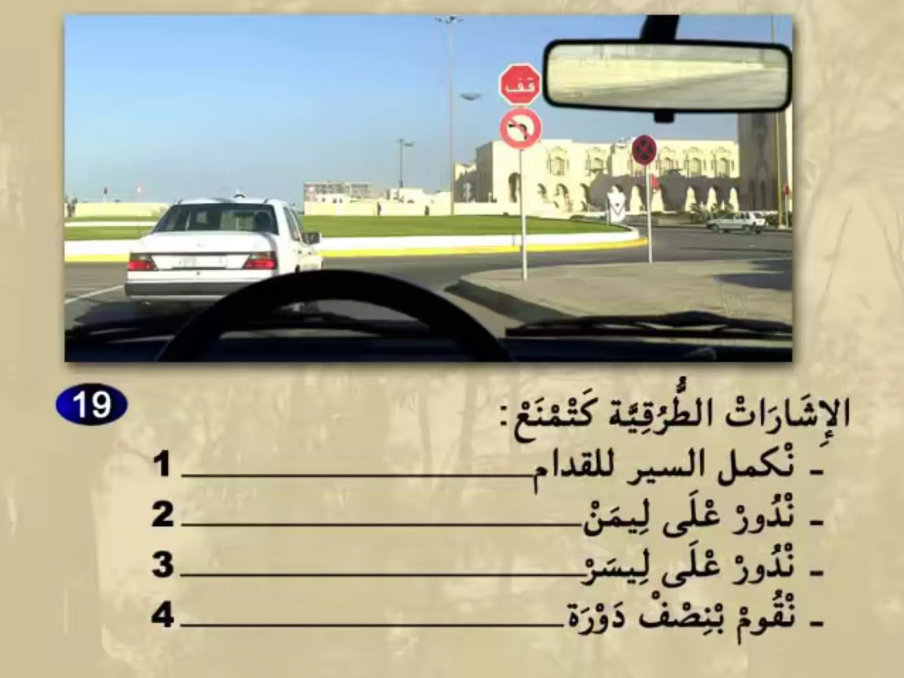
الجواب الصحيح: 3
الإشارة البعيدة فهي تعني على أنه ممنوع الوقوف والتوقّف بالنسبة للإشارات المتبقية وهي 2، الأولى والتي توجد في الأعلى وهي تعني إلزامية الوقوف والإشارة الطّرقية الثانية فهي تعني ممنوع تغيير الإتّجاه لليسار مباشرة. إذن الإشارات الطّرقية تمنعني من تغيير الإتّجاه لليسار.
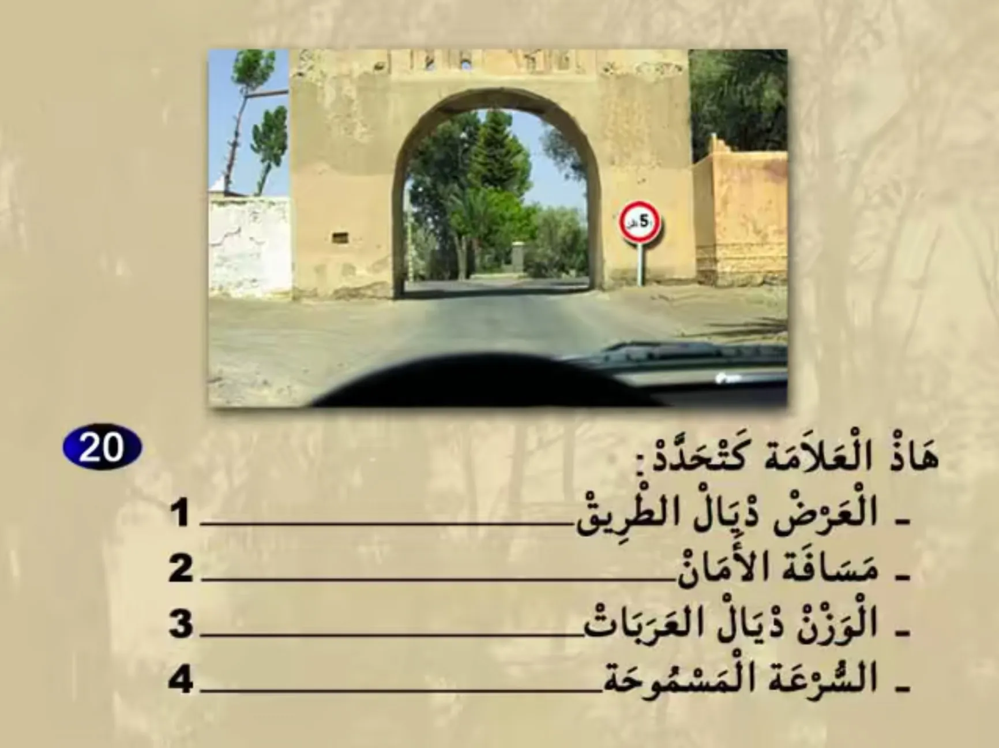
الجواب الصحيح: 3
بالنسبة للإشارة الطّرقية فهي تعني على أن العربات التي وزنها 5 طن وما فوق فهي ممنوعة من المرور عبر هذه الطّريق، إذن الإشارة الطّرقية فهي تحدد وزن العربات.
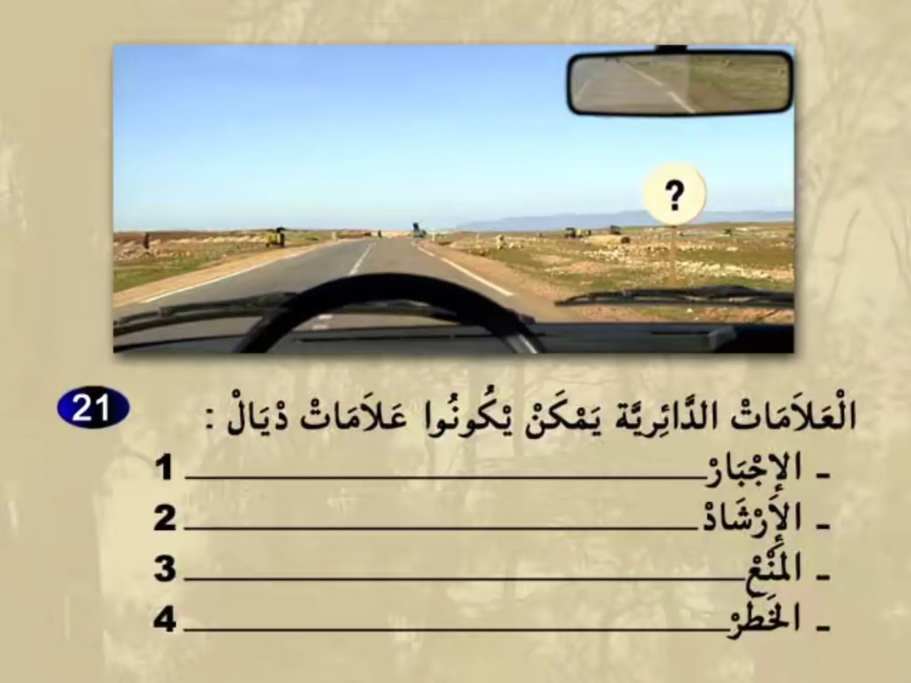
الجواب الصحيح: 1 و 3
العلامات الطّرقية الدائرية فهي علامات خاصة بالمنع (مثلا تحديد السرعة) وأيظا علامات الإجبار تكون دائرية (مثلا الإجبار للإنعطاف على اليمين). (علامات الإرشاد تكون عبارة عن مربع، وعلامات الخطر تكون عبارة عن مثلث).
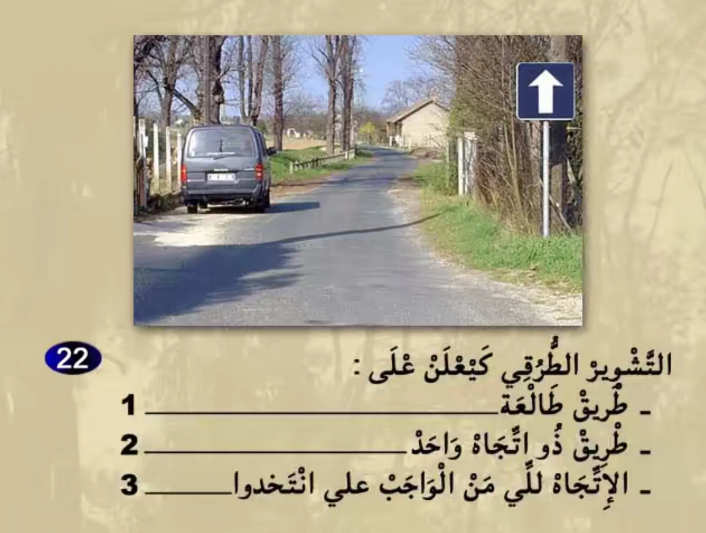
الجواب الصحيح: 2
بالنسبة للعلامة الطّرقية فهي تشير على أن الطريق ذات إتّجاه واحد.
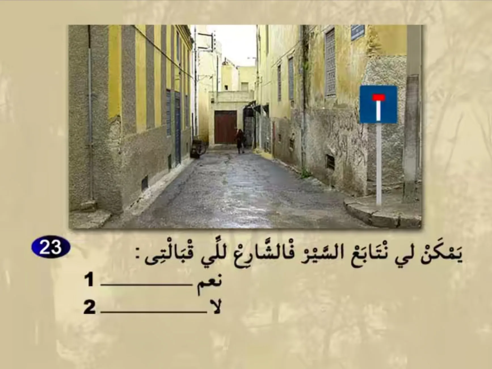
الجواب الصحيح: 1
نعم يمكنني متابعة السير في الشارع الذي أمامي. العلامة الطّرقية فهي تشير فقط على أن الطّريق بدون مخرج في نهايته، وليس المنع من المرور فيه.
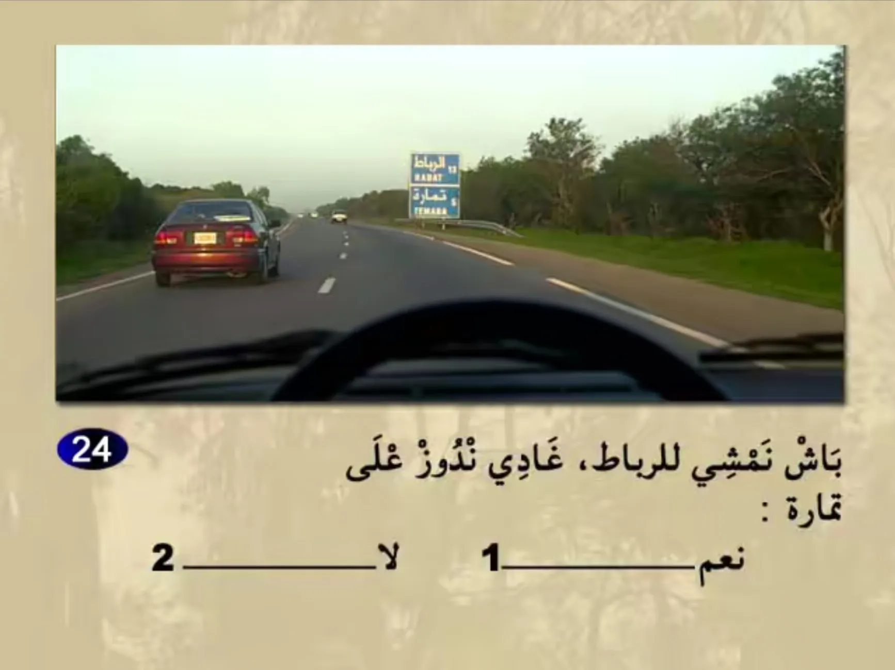
الجواب الصحيح: 1
بالنسبة للعلامة الطّرقية فهي تشير على أنه بقيت مسافة 6 كلم لكي نصل إلى مدينة تمارة، و 12 كلم لكي نصل إلى مدينة الرباط. إذن للذهاب إلى مدينة الرباط فسوف نمر أولا على مدينة تمارة وبعد ذلك سوف نصل إلى مدينة الرباط.
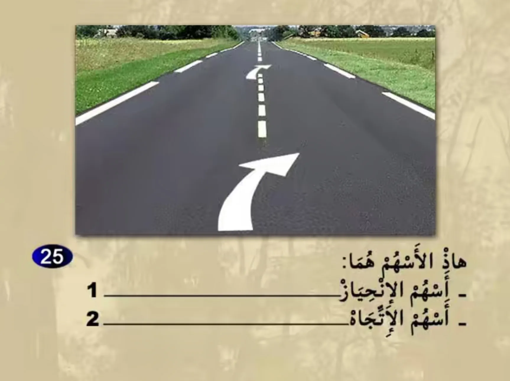
الجواب الصحيح: 1
بالنسبة للإشارات الطّرقية المرسومة على الأرض (الأسهم) فهي تشير إلى أسهم الإنحياز.
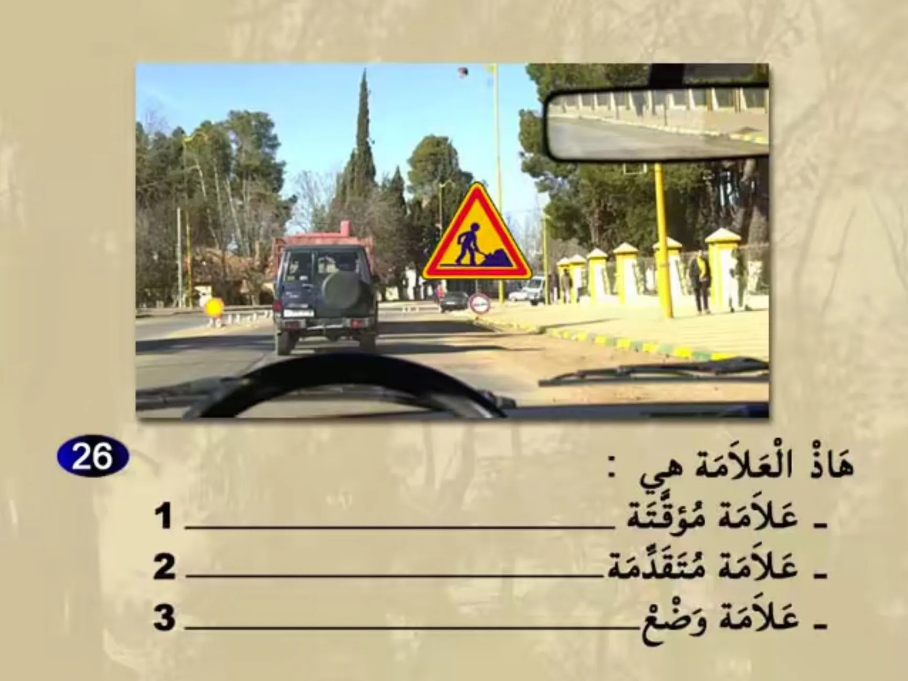
الجواب الصحيح: 1 و 2
العلامة الطّرقية فهي علامة مؤقتة (لونها أصفر) وأيظا فهي علامة متقدّمة لأنه الخطر لا يبدأ من عند العلامة الطّرقية (مثلا علامة الوضع فيبدأ تطبيقتها من عند العلامة) لكن العكس بالنسبة لهذه العلامة الطّرقية (على شكل مثلث) في المجال الحضري على بعد 50 متر وخارج المجال الحضري على بعد 150 متر.
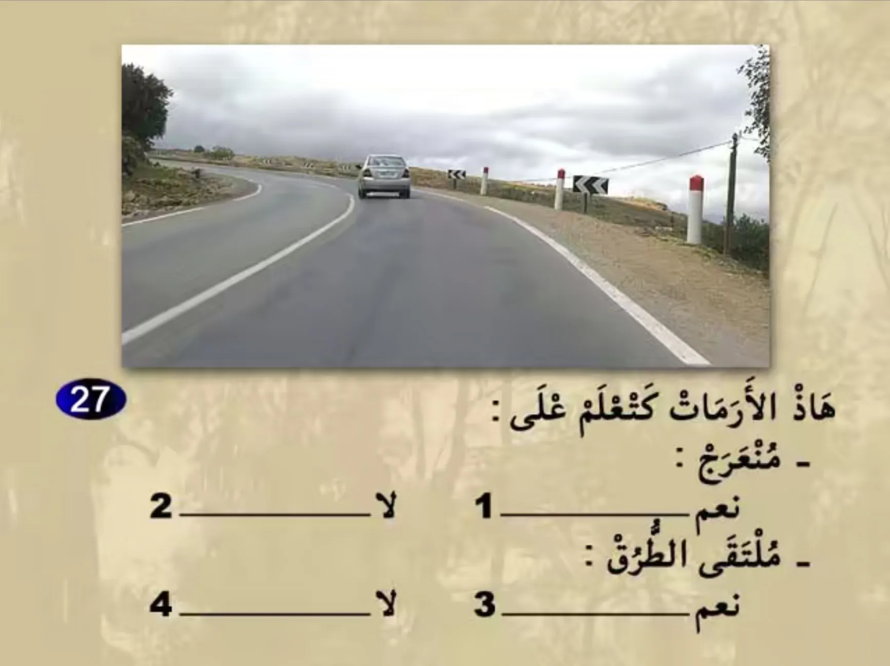
الجواب الصحيح: 1 و 4
الأرمات التي توجد في الصورة (لونها أبيض وأحمر في الأعلى) فهي تشير إلى منعرج وليس إلى ملتقى الطّرق (الأرمات تشير إلى ملتقى الطّرق عندما يكون لونها كلها أبيض، وليس أبيض وأحمر كما في هذه الصورة).
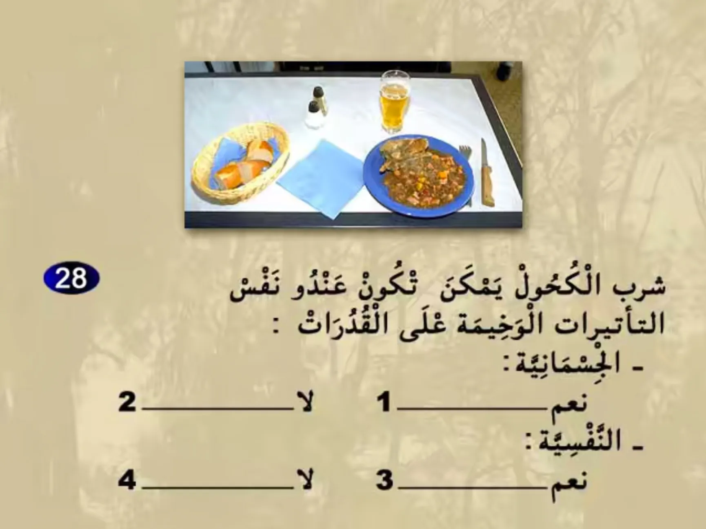
الجواب الصحيح: 1 و 3
شرب الكحول له عواقب وخيمة تتجلى في التأثير على القدرات الجسمانية وأيظا القدرات النّفسية.
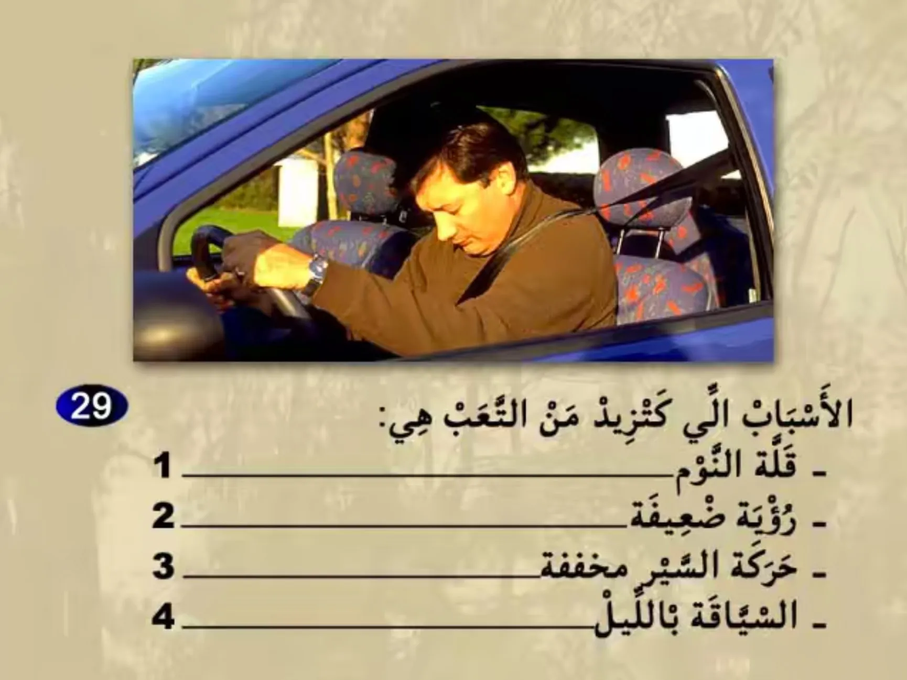
الجواب الصحيح: 1 و 2 و 4
بالنسبة للأسباب التي تزيد من التعب للسائق قنجد مثلا: قلّة النوم وأيظا تكون الرؤية ضعيفة بالإظافة إلى السّياقة بالليل. فهذه العوامل تزيد من التّعب بالنسبة للسائق. (بالنسبة لحركة السير مخففة فلا تزيد من تعب السائق لأن الطريق جيدة ومخففة. عكس لو كانت الطريق كثيفة فهنا تزيد من تعب السائق، لأن الطريق تكون بطيئة بسبب أنه يوجد الكثير من العربات على الطريق، لكن بما أن حركة السير مخففة فبالعكس هذا جيد ولا تسبب في تعب السائق.
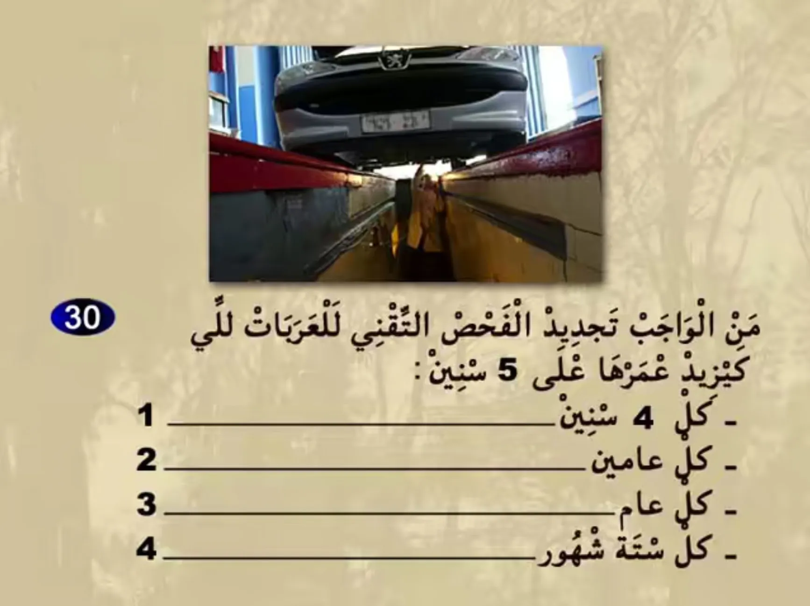
الجواب الصحيح: 3
القانون في هذه الحالة يقول على أن كل عربة يزيد عمرها على 5 سنوات فمن الواجب أن تقوم بالفحص التقني كل عام.
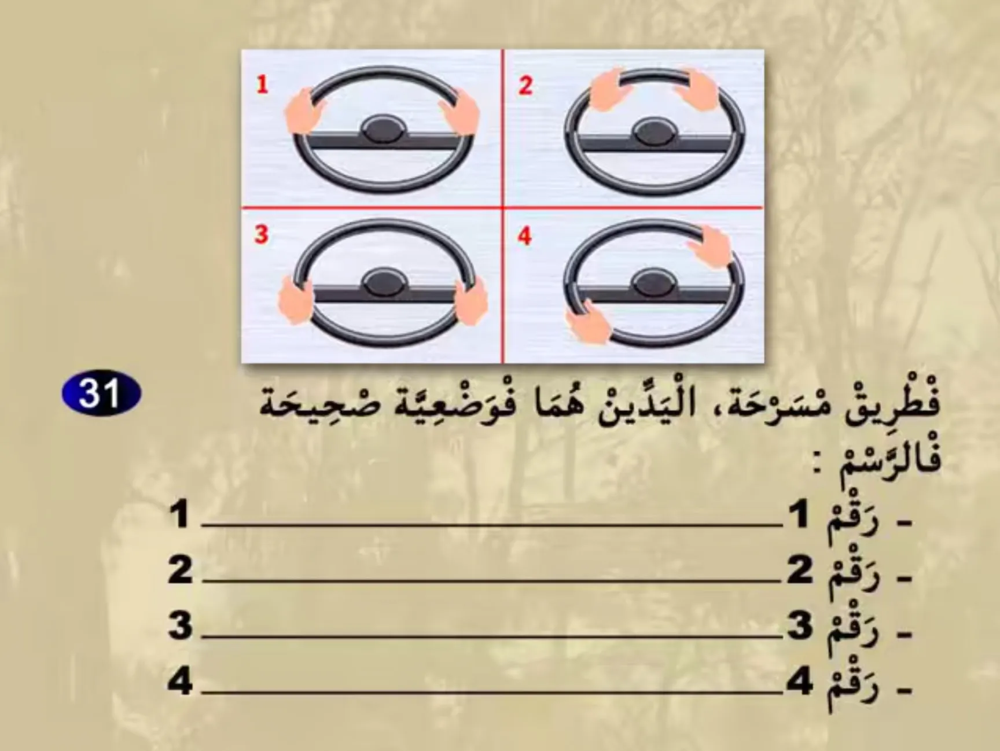
الجواب الصحيح: 1 و 3
في طريق مْسَرْحَة (طريق عادية)، فإن وضعية اليدين تكون في وضعية صحيحة في الصورة رقم 1 ورقم 3، فتلك هما الوضعيتان الصحيحتان لمسك مقود العربة في طريق مْسَرْحَة (طريق عادية).
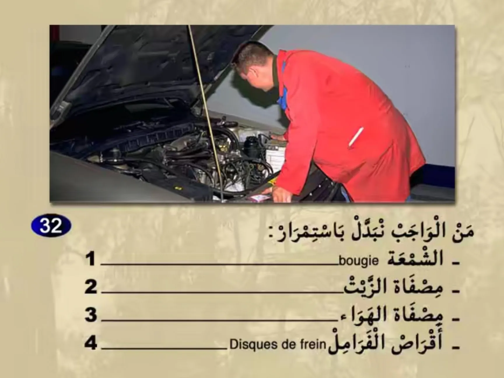
الجواب الصحيح: 1 و 2 و 3
من الواجب وبإستمرار أن أقوم بتغيير كل من الشمعة (Bougie) وأيظا مصفاة الزيت ومصفاة الهواء. بالنسبة لأقراص الفرامل (Disques de frein) فلا يتم تغييرها بإستمرار لأن مدة عملها بطريقة جيدة تبقى طويلة لذلك لا نقوم بتغييرها بإستمرار.
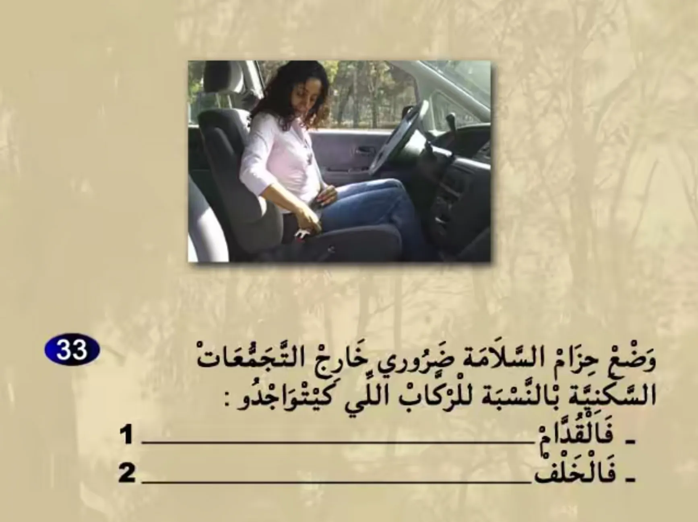
الجواب الصحيح: 1 و 2
داخل التجمّعات السّكنية وخارج التجمّعات السّكنية فإن وضع حزام السّلامة ضروري بالنسبة للركّاب المتواجدين في المقاعد الخلفية للسيارة وأيظا في المقاعد الخلفية للسيارة، لا يوجد فرق.
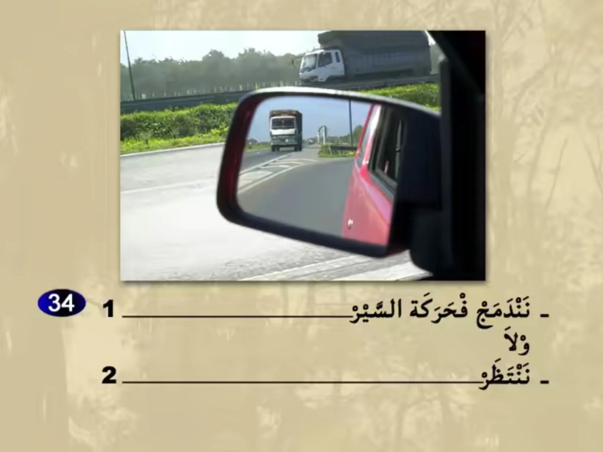
الجواب الصحيح: 2
كما نلاحظ في الصورة فنحن نتواجد في مسلك الإندماج، ولكي نندمج في حركة السّير يجب أن لا تكون هنالك عربات قريبة مني عند الإندماج لكي لا تقع حادثة طرقية. بما أنه توجد شاحنة قريبة مني، فيجب عليّ الإنتظار إلى حين مرورها وأتأكد بعد ذلك على أنه لا توجد عربات قريبة قادمة من الخلف، وبعد ذلك أقوم بعملية الإندماج في حركة السّير.
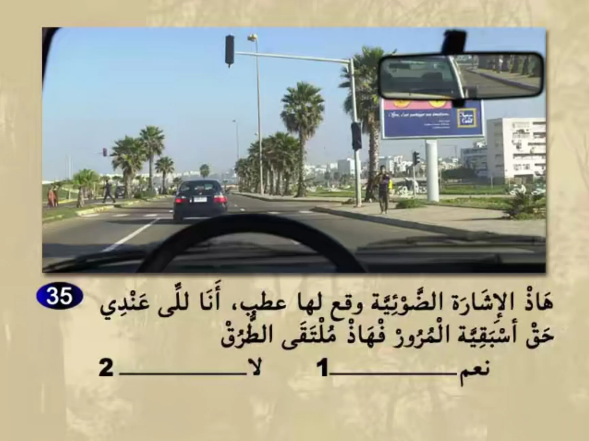
الجواب الصحيح: 2
عندما لا تكون هنالك علامات طرقية تنظم حركة السّير أو الإشارات الطّرقية بها عطب ما ولا تشتغل مثل هذه الحالة فلا يكون لدي الأسبقية في المرور، ففي هذه الحالة نقوم بتطبيق القاعدة العامة لملتقيات الطّرق وهي الأسبقية للعربات القادمة من الجهة اليمنى.
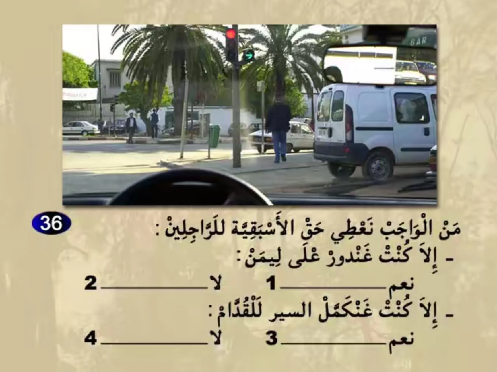
الجواب الصحيح: 1 و 3
من الواجب أن أعطي حق الأسبقية بالنسبة للراجلين دائما مهما كان الإتّجاه الذي سوف أسير فيه.
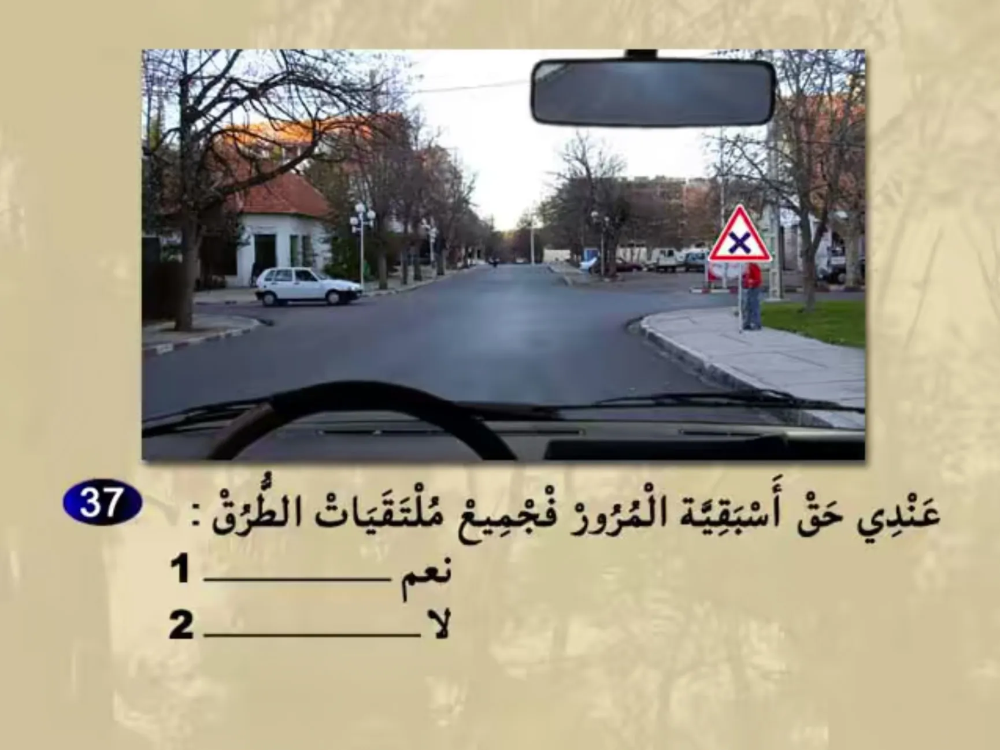
الجواب الصحيح: 2
في هذه الحالة ليس عندي حق أسبقية المرور في جميع ملتقيات الطّرق، بالنسبة للعلامة الطّرقية فهي تشير إلى وجود ملتقى الطّرق، وفي ملتقيات الطّرق فالأسبقية تعطى للعربات القادمة من الجهة اليمنى في ملتقى الطّرق القادم فقط وليس في جميع ملتقيات الطّرق القادمة.
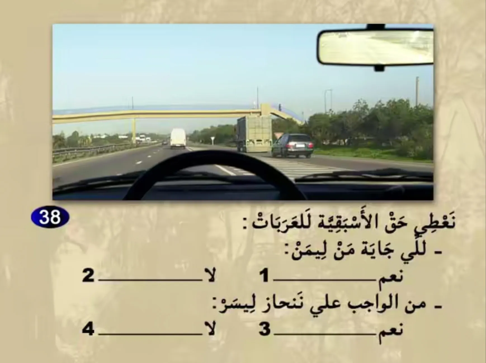
الجواب الصحيح: 2 و 4
بالنسبة للعربات المتواجدة على الجهة اليمنى فهي تتواجد في مسلك الإندماج وتستعد للإندماج في حركة السّير، لذلك ليس لديهم حق الأسبقية ويجب عليهم الإنتظار للإندماج في حركة السّير بما أنهم يتواجدون في مسلك الإندماج. إذن لا أعطي حق الأسبقية للعربات القادمة من الجهة اليمنى وأيظا ليس من الواجب عليّ الإنحياز للجهة اليسرى من الطّريق.
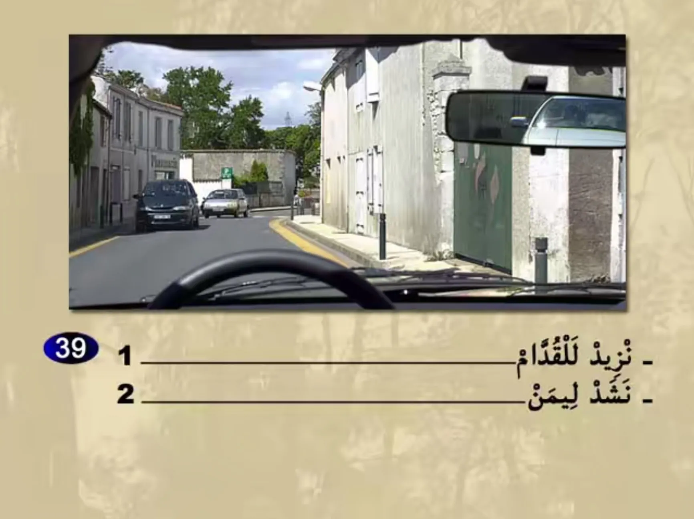
الجواب الصحيح: 1
في هذه الحالة فإن السيارة الرمادية تريد تجاوز العربة السوداء لإكمال طريقها، لكن يجب عليها أن تنتظر أن أقوم أنا بالمرور أولا لأنه لا يوجد شيئ في طريقي، إذن في هذه الحالة أقوم بالمرور أنا الأول لأنه لا يوجد شيئ في طريقي.
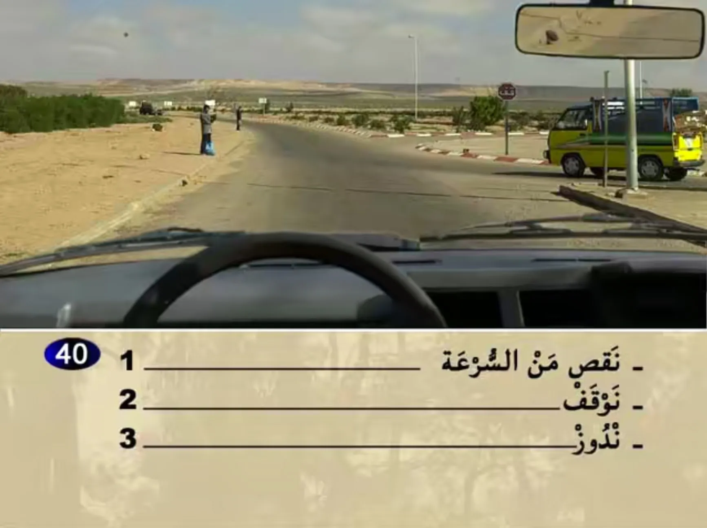
الجواب الصحيح: 1 و 3
بالنسبة لملتقى الطّرق القادم فيجب عليّ أن اقوم بتخفيف السرعة بما أنني سوف أصل إلى ملتقى الطّرق وأقوم بالمرور ولا أتوقف لكي أعطي الأسبقية للعربة القادمة من الجهة اليمنى لأنها لديها إشارة طرقية (قف).